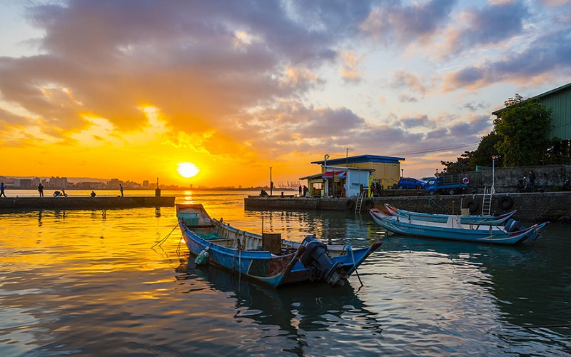

Taimsui
New Taipei City
Tamsui Fisherman's Wharf
Tamsui is a sea-side district in New Taipei and is named after the Tamsui River. It is one of the most popular tourist
attraction in Taipei because of the beautiful sunset by the sea and the historical sites. Tamsui Fisherman's Wharf
not only serves as a fish harbor but also a spot for sunset. The Tamsui Lover's Bridge, which cross the
Tamsui Fisherman's Wharf, will turn into different colors in the evening. The Tamsui Old Street is the teeming
area in this district. You can find some special snacks here, such as fried fish crackers and iron eggs.
Fort San Domingo is a historical site which was originally a wooden fort built by the Spanish in 1629 and is declared
to be the first class National monuments. It position overlooking the mouth of the Tamsui River makes it a
particularly attractive scenic spot.
- Best seasons: all year around
- Transportation:
MRT Taimsui station.